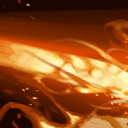
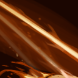

PHOENIX
ระยะไกล
ตัวซัพพอร์ต
ตัวนูค
ตัวเปิด
ตัวหนี
ตัวหยุด


TALENT
ความสามารถโดยย่อ
Icarus Dive
- ด้วยความที่สกิลนี้จะทำให้ Phoenix บินโฉบได้ และขณะบินอยู่สามารถใช้สกิลหรือไอเท็มได้ด้วย !! แถมยังใช้ปั่นป่วนศัตรูในเลนที่กำลังใช้ Healing Salve หรือ Clarity ได้อีกด้วยFire Spirits
- ด้วยความที่สกิลนี้สามารถปล่อยวิญญาณดวงไฟได้อย่างอิสระ 4 ดวงและที่สำคัญลดความเร็วในการโจมตีเยอะมาก !! บอกเลยว่าถ้าใช้ดีๆแล้วใช้ Super Nova ศัตรูไม่สามารถทำลายดวงอาทิตย์เราได้แน่นอน แถมยังสามารถใช้เพื่อปั่นป่วนฮีโร่ศัตรูเวลาจะ Last Creep ได้อีกด้วยSun Ray
- ด้วยความที่สกิลนี้ทำความเสียหายและฟื้นฟูในคราวเดียวกัน และความแรงขึ้นอยู่กับเปอร์เซ็นต์พลังชีวิตของเป้าหมาย บอกเลยว่าฮีโร่ที่มีเลือดเยอะๆนี่ โดนสกิลนี้ทีเลือดไหลเป็นน้ำแน่นอนครับผม แถมยังสามารถฮีลเพื่อนได้อีกด้วย บอกเลยว่าเวลาตีป้อมศัตรูอยู่ไม่ต้องกลัวเลือดหมด Super Nova
- ด้วยความที่สกิลนี้ทำให้ Phoenix กลายเป็นดวงอาทิตย์ที่หลังจาก 6 วินาทีจะสตันศัตรูรอบๆบอกเลยว่า เวลาสู้กันอยู่ หาก phoenix ใช้สกิลนี้ทุกคนจะหันความสนใจไปทำลายดวงอาทิตย์แน่นอน เพราะมันทำความเสียหายทะลุการป้องกันเวทสมบูรณ์ !! แถมยังทำความเสียหายได้แรงมากอีกด้วย
BACK
ข้อมูลเพิ่มเติม